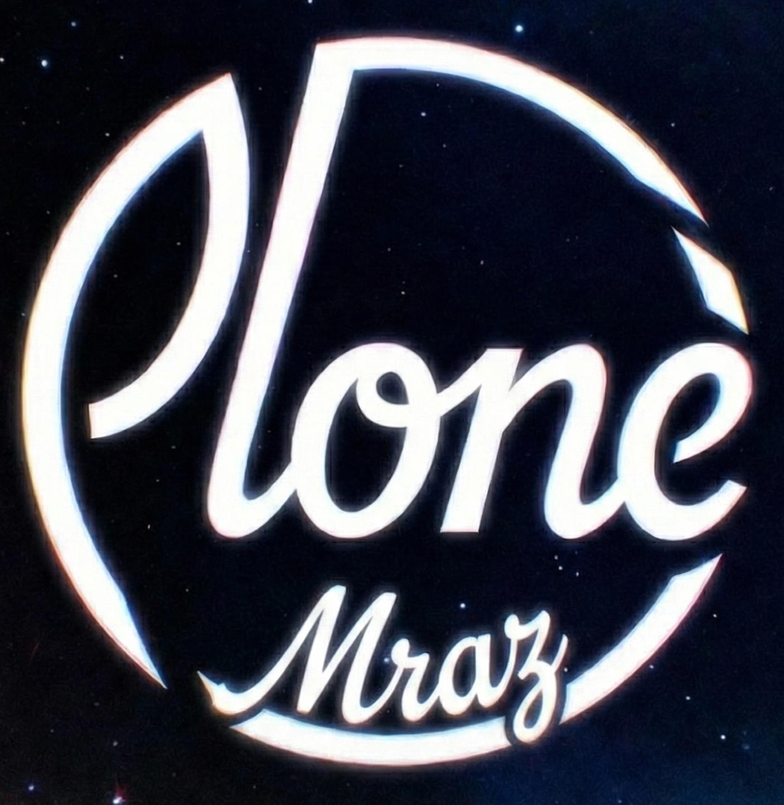

Plone Mraz
Humans think GREED is just for Authority and Resources.
But any entity always CRAVES for something it doesn't have.
Meta-Philosophy — one operation, seven articulations
Start here A Programme Overview The architecture connecting the seven papers.- 2026a The Synthetic Principle DOI
- 2026b Aviplestos DOI
- 2026c Ontonoetic Pattern DOI
- 2026d Patterns and Cognition DOI
- 2026e The Passage of Becoming DOI
- 2026f Potentamis and Fasaion DOI
- 2026g Stachoria DOI